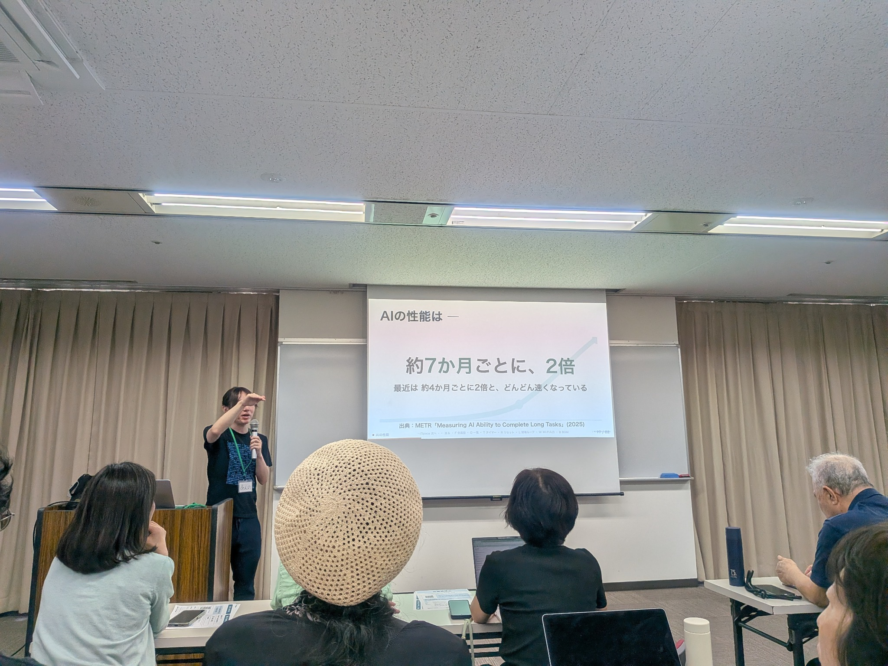
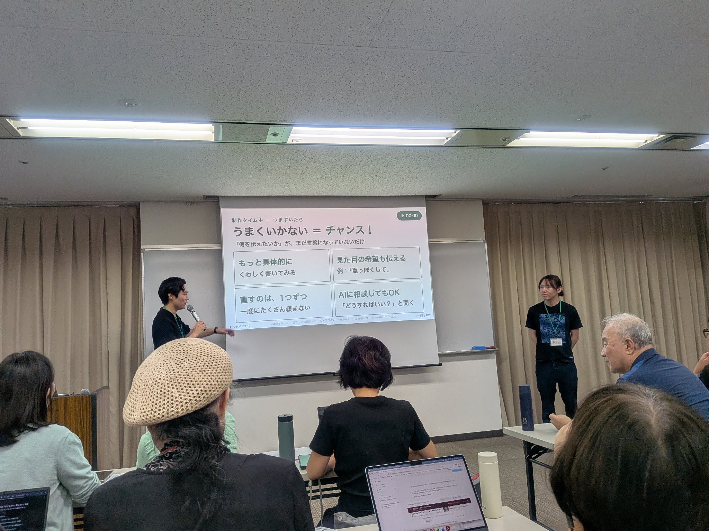
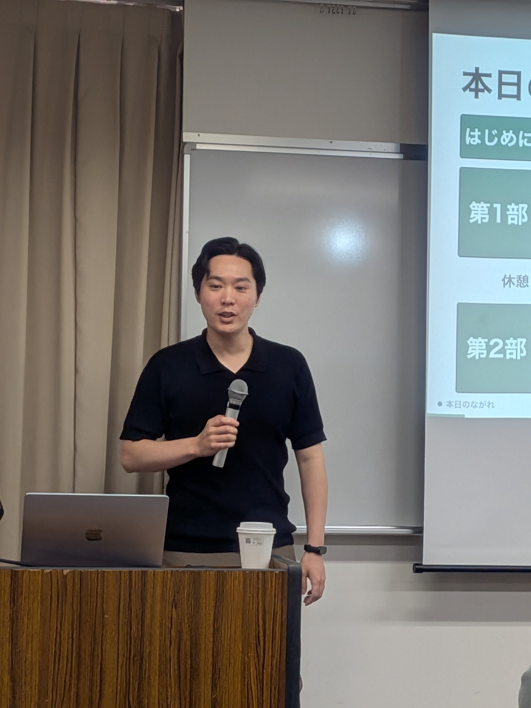
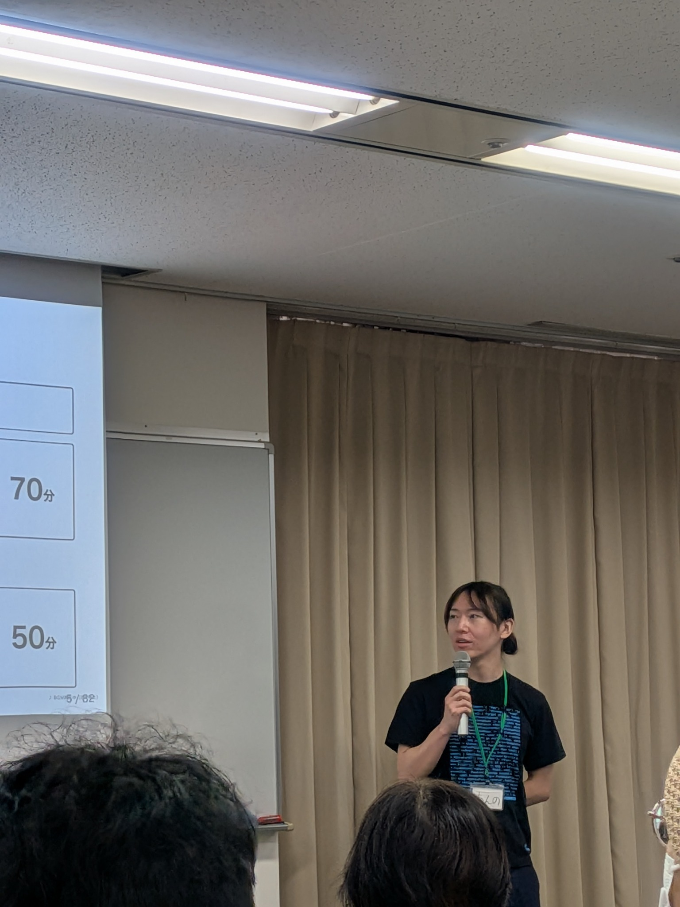
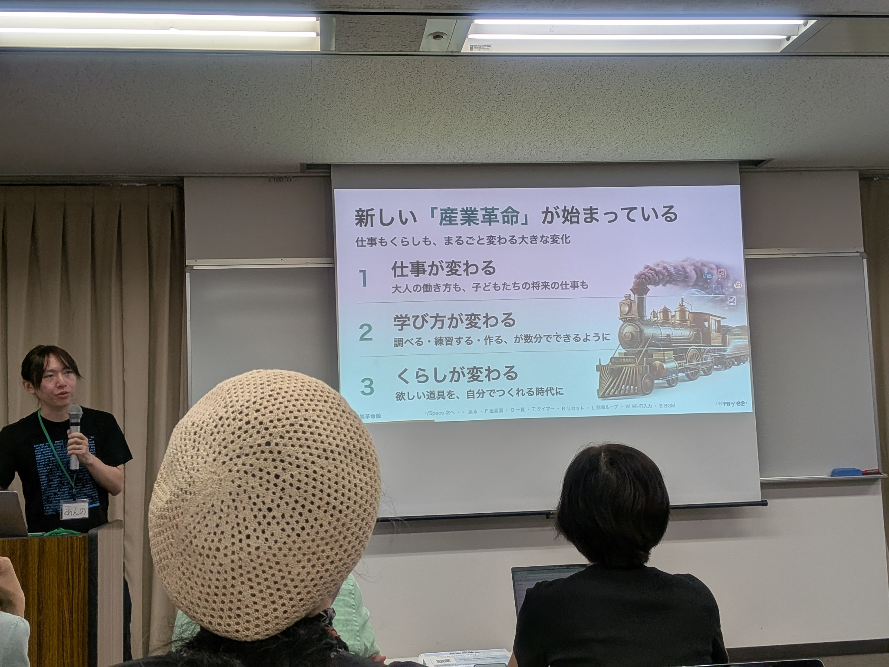
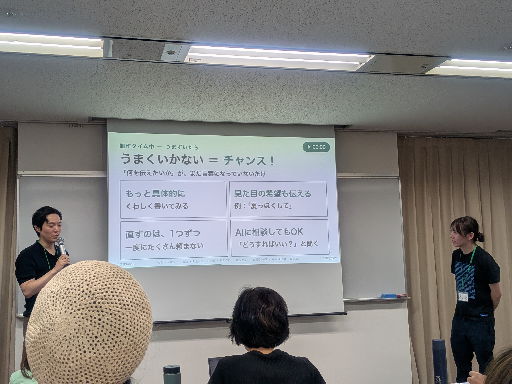

{kind=link}
{kind=link}
{kind=link}

01
AIは、どれくらい変わっている？
導入では、AIの能力の変化をグラフで紹介。スライドには「約7か月ごとに、2倍」とあり、METRの研究名が記載されています。
この数値は会場の説明の記録です。「AIのあらゆる性能」が一律に倍増するという意味での検証はしていません。
チームみらい 全国キャラバン2026
2026.09.19 土曜日・神戸
会場に来られなかった方へ。
AIに触れた時間、国会の話、参加者それぞれの気づきを、写真とともにお届けします。

01 / THE DAY


02 / AI WORKSHOP
会場写真のスライドから、AI体験会で紹介された内容をたどります。説明は写真の読取・要約です。

01
導入では、AIの能力の変化をグラフで紹介。スライドには「約7か月ごとに、2倍」とあり、METRの研究名が記載されています。
この数値は会場の説明の記録です。「AIのあらゆる性能」が一律に倍増するという意味での検証はしていません。

02
次のスライドは、AIによる変化を新しい「産業革命」と表現。働き方、調べたり練習したりする方法、そして自分の欲しい道具をつくることを挙げていました。
専門家だけの話ではなく、自分の生活とつなげて考えるための導入として読めます。

03
制作中のスライドには「うまくいかない＝チャンス！」という言葉。やりたいことを言葉にし直すためのコツが並んでいました。
03 / VOICES & NOTES
会場のにぎわい、印象に残った言葉、これからへの要望。提供された7件の投稿を、話題ごとに並べました。すべて編集者による要約で、議員の発言は投稿者が記録した内容です。
会場の様子
運営を手伝ったmachine⿻さんは、会場が参加者で埋まっていたと報告。安野さん・峰島さんに加え、武藤さん・しゅうへいさん・宇佐美さんも来場していたと記しています。
参加して学んだこと
不惑悠さんは、机を並べたスクール形式の会場がほぼ満員だったと紹介。5人の国会議員やスタッフとともに、バイブコーディングやデジタル民主主義への理解を深めたと振り返っています。
活動の優先順位
machine⿻さんによる峰島議員の発言記録。地元行事を回る活動について、12人の議員がそれぞれ地元活動を優先するより、まず国全体のために働くことを重視している、という趣旨が紹介されています。
他党との関係
峰島議員が、当初の永田町への先入観とは違い、他党の議員からも応援や政策への評価を伝えられる、と話した記録。国を良くしたいという思いを共有する人が多い、という受け止めが紹介されています。
選挙と目的
峰島議員が、選挙区について助言を受けても、まず地域で何を実現したいか、そのためにどれだけ議席が必要かを考える、と話した記録。党勢拡大だけを目的にしない姿勢が紹介されています。
AIインタビュー・質問
CatPersonOptimistさんは、安野氏が会場で言及したAIインタビューの案内を共有。質問サービス「Slido」で自分も質問したと記しています。会場では、集めた意見がどう使われ、その後どう伝えられるのかも話題になりました。
参加しやすさへの要望
自己紹介や制作物の見せ合いなど、初対面の人との交流を促す場面が複数あったという記録。交流をなくしてほしいのではなく、苦手な人も取りこぼされないよう配慮してほしい、と意見を送ったそうです。
04 / SOURCES
参加者が撮影した会場写真と、掲載許可を得た参加者投稿をもとにした非公式のイベント記録です。政党の公式レポート・議事録ではありません。
出典確認・編集日：2026年9月20日。本文と写真はXへのログインなしで読めます。リンク先のSNSではログインを求められる場合があります。
{kind=link}
{kind=link}